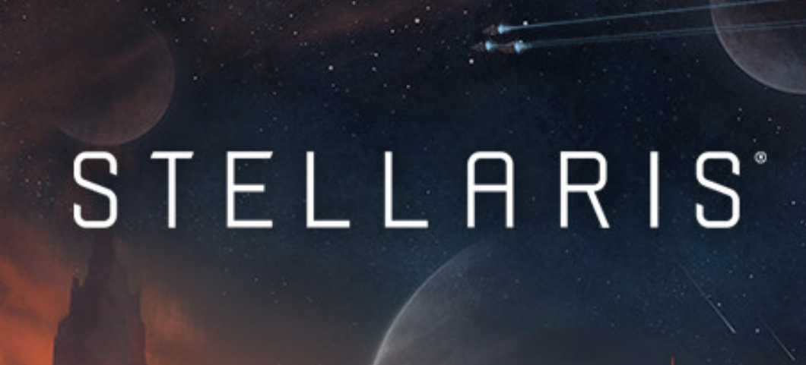

Stellaris

Utforska en galax full av underverk i detta stora sci-fi-strategispel från Paradox Development Studios.
Interagera med olika utomjordiska raser, upptäck konstiga nya världar med oväntade händelser och utöka räckvidden för ditt imperium.
Varje nytt äventyr har nästan obegränsade möjligheter.
Paradox Interactive AB är en svensktbörsnoterad spelutvecklare och- förläggare i Stockholm, grundat 1998.
Företaget är känt för att förlägga historiska strategispel, såsom Europa Universalis.